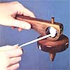
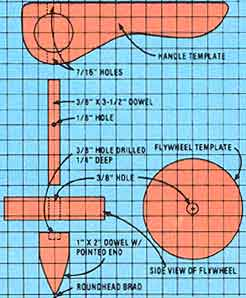

Amidst the gadgetry and gimcrackery of today's modern toys, a plain old-fashioned plaything sure looks good! And it would be hard to imagine a more oldtimey toy than the homemade wooden top put together by MOTHER's craftsmen.
The little spinner can easily be built by even the most amateur woodworker . . . and requires nothing more than a coping saw, a drill (with 1/8", 3/8", and 7/16" bits), some sandpaper, a small roundhead finishing brad, carpenter's glue, a 3-1/2" length of 3/8" dowel, a 2" section of 1" dowel, an old shoestring, a piece of scrap wood (that measures about 3/4" X 5" X 7"), and approximately half an hour of time.
To make the project even simpler, we've provided grid drawings that can easily be transferred to your working material. (Because of space limitations, the patterns shown must be redrawn on 1/2" squares, then traced onto your lumber scrap. Be sure to retain the center-point mark on the circular piece as you do so.)
Cut the wood to size, then carefully drill a "pilot" hole through the handle and cope out the round opening-as indicated-that serves as the top's string housing.
With that done, "guesstimate" the center of the just-cut opening and bore two 7/16" holes-on a vertical line that intersects the central point-through the upper and lower "walls". Next, carefully drill a straight 3/8" hole exactly through the midpoint of the toy's flywheel . . . to serve as the axle mount.
Now take your piece of 1" dowel, find its center, and drill a 3/8" hole about 1/4" into one end. Using a coarse piece of sandpaper (or a file), fashion the opposite end of the peg into a point as shown, and tap your brad right into the tip. To complete the "gyro" part of the top, lightly coat one end of your 3/8" dowel with glue and push it through the wooden disc until a 1/4" nub protrudes. Cover the nub and a small area around it with adhesive, and fasten your metal-tipped peg to the flywheel and its axle. Then temporarily slip the shaft into the handle's two holes and drill a 1/8" bore through the rod-as illustrated-to serve as a catch for the string "motor".
Finally, sand the entire knickknack to a smooth finish (you might want to round its edges), and stain it or add a coat of polyurethane if desired.
To set the gyro spinning, merely slide it into the handle, thread one end of the cord through the axle hole, carefully wind the remaining string around the shaft, and pull it smartly . . . the whirling gizmo will drop from the handle and dance merrily along any hard, smooth surface. There's little doubt that your home-built top will fascinate the youngsters on a rainy spring day . . . and who knows, once in a while you might be tempted to give it a whirl, too!
|
 |
 |
|